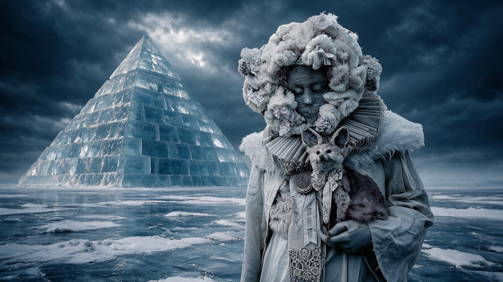

The journal
Dispatches
Longer thoughts from the circle: what people are making, what is changing, and what the work asks of us. No algorithm, no scroll — just the writing.

Latest · 21 Nov · Mara Voss
On making things that outlast the feed
A post is gone in a day. A room, a book, a song someone can hum back to you — those have a different clock. A note on why this community exists.
Read the dispatch →
14 Nov · Ivo Halden
Notes from the first critique night
Six people, three unfinished pieces, and a rule against saying “I like it.” What actually happened when we tried to talk about work without scoring it.

7 Nov · Sena Okafor
The seven rays, in practice
Why seven disciplines instead of one long list of job titles — and how the rays shape who finds whom inside the circle.